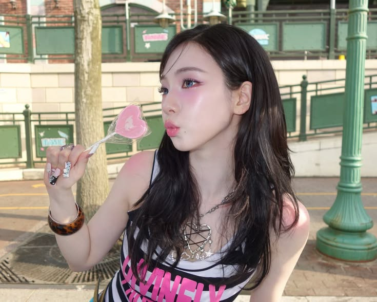

1. You and your what-ifs.
you sometimes worry about things that haven't even happened yet. and then i have to remind you, "cukup pikirin hari ini dulu, urusan besok, ya kita pikirin besok." as always wkwkwkwk.
Breaking news: one very specific human is getting older today. Please remain calm. Or don't. It's your birthday, I guess.
I made you a tiny website because apparently saying “happy birthday” normally was too mainstream for me.
warning: contains unserious behavior, introvert allegations, and one sincere message ♡
This is a very serious survey conducted by a highly questionable institution (me).
Some things about you are just so you that I can't not mention them.

pretty kaluna.jpg ♡
you sometimes worry about things that haven't even happened yet. and then i have to remind you, "cukup pikirin hari ini dulu, urusan besok, ya kita pikirin besok." as always wkwkwkwk.
you sometimes tell me the most random things that happen in your life. and honestly, i like listening to them. your stories give us more things to talk about, and i kinda like how they make our conversations last a little longer :D
jujur menurut gua, lu dan gua nih sama-sama kaya karakter default yang hidupnya gitu-gitu aje in this whole social era wkwkwk. gua gak tau kenapa gua masukin ini ke "kaluna-coded" but i just thought it was funny. like, we both get to that point where we're like, "lah bjir ternyata ada yang lebih parah dari gua yak."
sometimes we're both confused about what to do when life gets messy. but i guess it's nice that we can talk about it and try to figure things out together. we don't always have the answers, but at least we can share our thoughts and help each other see things a little differently (anjay)
Kayaknya gua gak pernah ngomongin hal-hal ini ke lu. but since it's your birthday, gua mau jujur aja gimana pandangan gua ke lu selama ini dari apa yang gua tau.
you have this way of making people feel heard and validated. kaya kemarin gua ada masalah dan gua cuma niat cerita secara garis besarnya aja lah, tapi ya ujung-ujungnya gua ceritain semua jadinya wkwkwk. gak tau kenapa but talking to you makes me feel like i'm really being listened to, and i feel safe opening up to you. you're kind and attentive in a way that matters.
jujur gua masih segen banget sampe sekarang perihal ini, but i'm genuinely amazed by how you still try to reach out to me, ngajak ngobrol lagi, dan tetep berusaha rechat gua. gua sendiri gak bisa seberani itu buat ngelakuin hal yang sama (especially with our past and everything yang you know lah wkwkkwk). tapi belakangan ini gua ngerasa kaya seneng aja sih, kalo lu gak nyoba untuk reach out gua terus-menerus keknya kita gak akan ngobrol sepanjang ini lagi. and honestly, i'm glad you did.
you're forgiving, genuinely kind, and you have such a big heart. i know people make mistakes, and things aren't always as simple as they seem. but i really admire how you can still find it in your heart to understand people, even when things get complicated. i think there's something really beautiful about the way you see people beyond their mistakes, and that's one of the things i appreciate about you.
lu tuh kalo udah sayang sama seseorang, kaya pengen ngelibatin orang itu ke banyak hal di kehidupan lu. entah itu cerita-cerita random lu, hal kecil yang terjadi hari ini, atau hal-hal yang menurut lu penting. and honestly, gua pernah ngerasain itu dari lu, and it made me feel like i mattered to you. kaya seneng aja gitu rasanya pas tau kalo gua juga jadi bagian dari hal-hal yang lu ceritain dan lu bagi. i think it's a really nice thing about you, lun. maybe it seems like a small thing to you, but it actually means a lot to the people who get to experience it.
kadang lu suka tiba-tiba asbun gitu, and the funny part is gua selalu ngiranya lu lagi ngetik serius aowkwowk. soalnya gua gak terbiasa ngeliat lu yang begitu, jadi pas lu nyeletuk sesuatu, gua malah mikir lu beneran ngomong serius jir padahal maksud lu mah lagi becanda doang yak. tapi jujur, gua suka sih moment-moment kaya gitu, pas lu tiba-tiba ikutan asbun kaya gua, even when i don't get the joke at all :V lucu aja ngeliat sisi lu yang ini.
when i share thoughts about how we communicate or how emotions get handled, you try to listen instead of getting defensive. you stay open to learning and doing better. that kind of effort takes heart, and i hope you give yourself credit for it.
A little song for you ♡